Take the slop out.
Agents add parts, then spread them across every surface of a feature. You remove, you check the constraints, and you look at the whole thing before it ships.
Matt Dailey (@reactiverobot)
one surface
3 extras
Opening in the app
app:// raises the thread in the app
Your browser asks to open the app. Choose Open.
Your browser will ask to open the app on this computer.
Shown once.
The decision can stand alone.
For each part, ask if you need it. The protocol line, the repeated instruction, and “shown once” can go.
Two layers, one practice.
Part 1 is craft on a single surface. Part 2 is the loop when a feature crosses many. The craft sits inside the loop.
Seven rules for one screen. They also run inside every step of a larger feature.
Six steps when one prompt would otherwise paint every screen at once. Come back ready to sculpt.
Consider the whole.
List the constraints. Try solutions that satisfy them. If the list should change, start again.
The loop
3 steps
You choose the list. Type and size, flows the product must support, states the logic can be in.
Line up several options that the list allows. Ask for three or four, and keep the ones that fit.
A constraint showed up, or one can leave. Change the list before you touch the screen again.
Spot-fix
wackamole
Sidebar
Refs
Reviews
Files
Each fix is local. The constraint list stays put.
Christopher Alexander, Notes on the Synthesis of Form. Feedback such as “make this more prominent” is a moment to check the list, then decide.
Six moves on one surface.
The loop above is the first rule. These are the rest.
Remove
Agents add. For each part, ask if you need it.
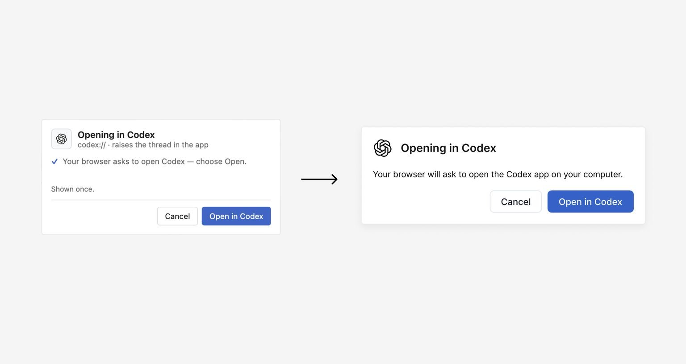
Design tool
Iterate in Figma, a design mode, or a throwaway HTML page. A rough idea hardens once it lives in the product. Ask for three or four variants.
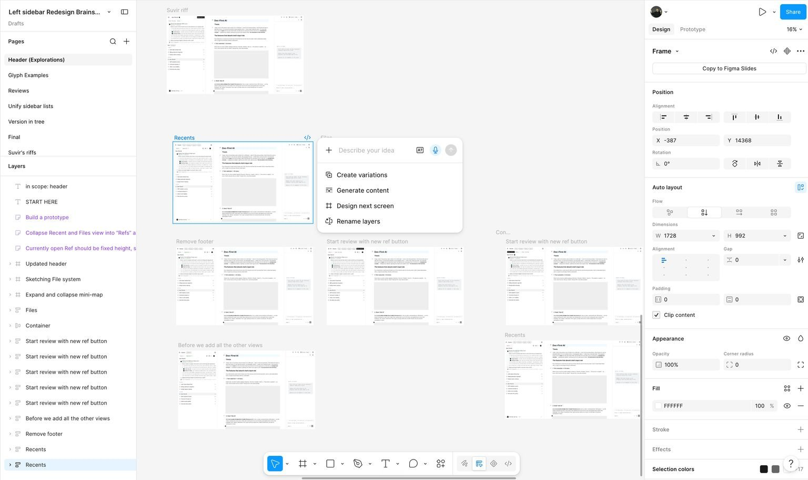
Components
Keep the view separate from the logic. Build the piece on a showcase page before it lands in the product.
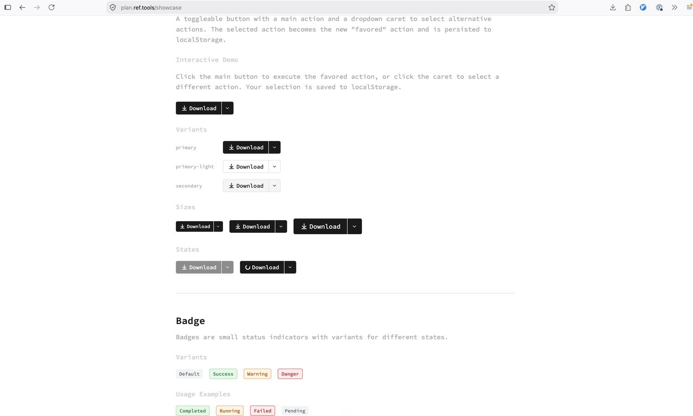
Preview deploys
Judge the design with real data. Split the frontend pull request when that keeps the preview easier to read.
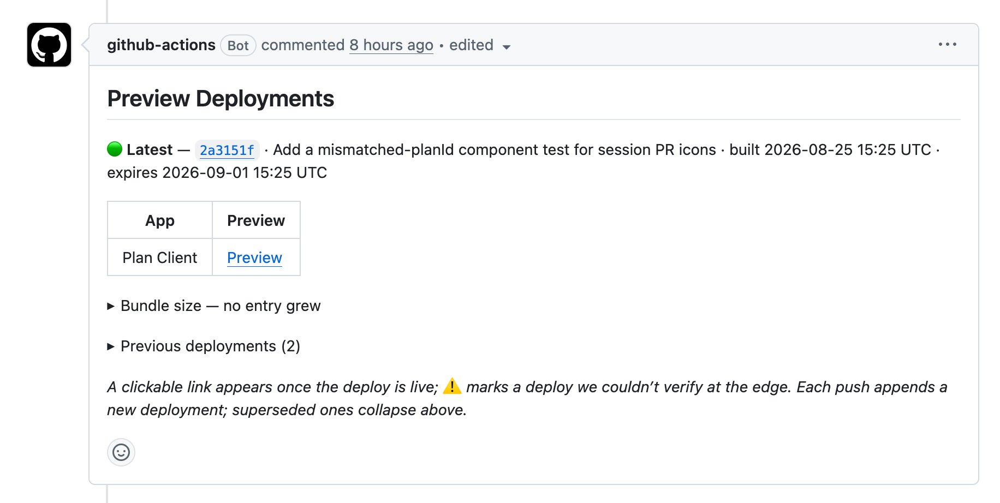
Steal
Most of these problems are already solved. Keep screenshots, and hand them to the agent as context.
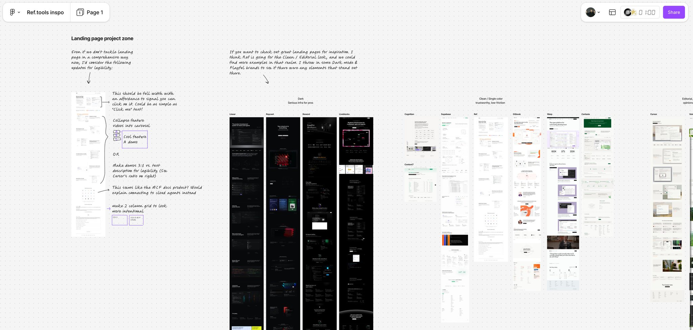
Taste
Notice your own reaction. Engineers can tell when a screen fails, and reps build the library of fixes. Pass 1 is still rough.
A feature with many surfaces.
Hand over the plan. Come back to clay. If the shape is wrong, or people surprise you later, return to the start.
The pass
6 steps
UnderstandDieter Rams: good design makes a product understandable. Map the surfaces and the technical constraints. Write the flow by hand, and ask until the map is yours.
TraceGive the agent the plan, then come back to a rough working version. Skim for anything strange. A major divergence means the map was wrong. Go back to Understand.
Zoom outLook at every state a person can hit. Group the screenshots by surface and name the bugs. Say “remove this” often. Small fixes get marked. Surprises reopen the map.
Zoom inA few surfaces are the crux. Pull those into a design tool or an HTML prototype. Work the details, and leave the rest of the product alone for a while.
TeamHuman feedback is the part you cannot skip. Put it on staging, use it yourself, and post before-and-after shots where the team already talks.
ShipPut it in people’s hands. A surprise in real use is the next constraint. Take it back to Understand.
- Trace diverges
- Ship surprises
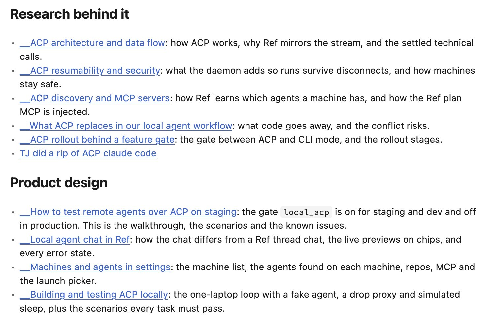
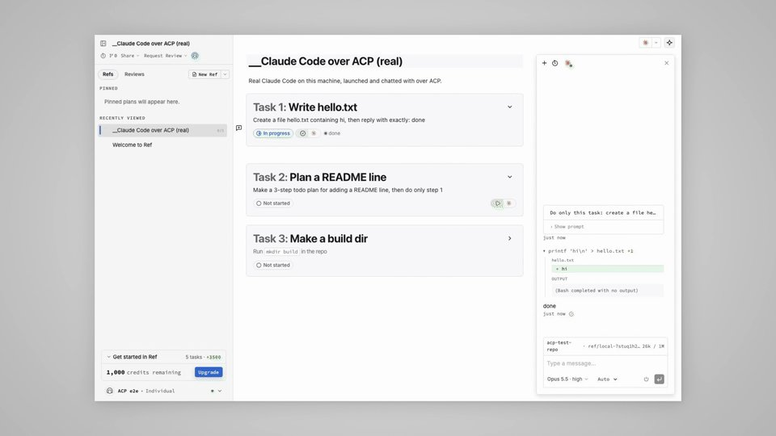
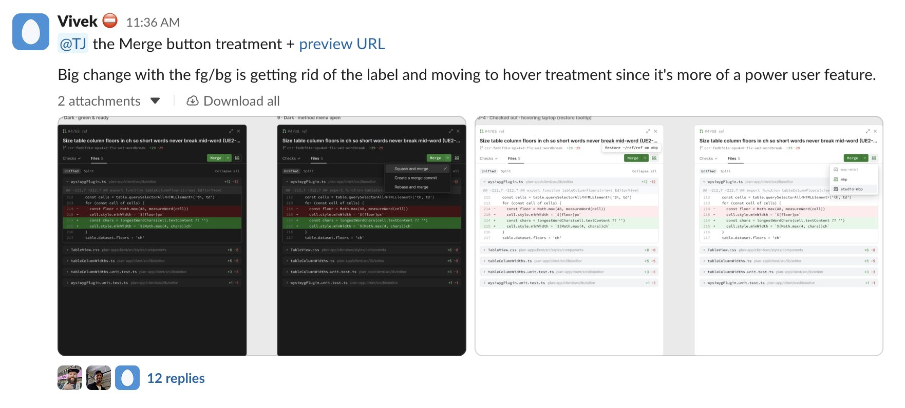
Every state, then the crux.
Sweep the grid. Spend your care on the screen that carries the idea.
Zoom in
Machines2 online
Agentsthree found
MCPplan
The map of the product. Names and states, in an order a person can learn.
Type a message
The daily view. At 340 pixels it still has to feel finished.
Write README.md
Changed by the agent
Cancelled
Status lines sit on the left, with the thread. Centered meta is the bug.
No session yet
Stop is already offered.
The empty state is a state. The sweep includes it.
Couldn’t start. The login expired.
Sign in, then run it again.
Say what happened, and the next action.
Allow this once?
Write README.md
The crux. The decision is the whole screen. Details get the time here.
Same list480 wide
Same rankmore air
Width changes the frame. The hierarchy stays.
The plan finished
One fact. Fewer controls than the app.
The same event, on another surface.
Ask for every state, grouped by surface, and the bugs found on the way. He packaged that pass as /ui-sweep in the Ref skills.
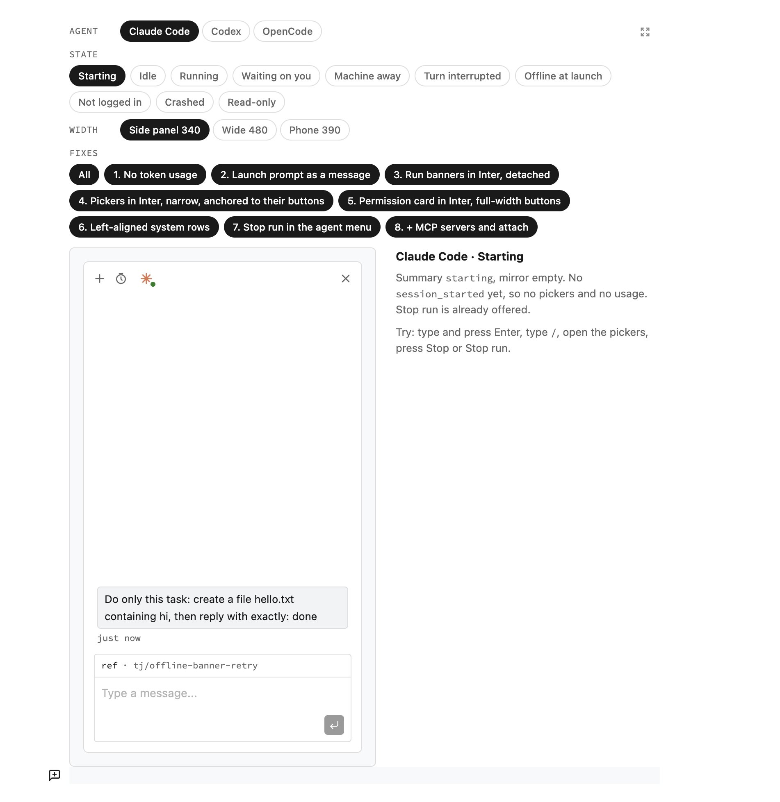
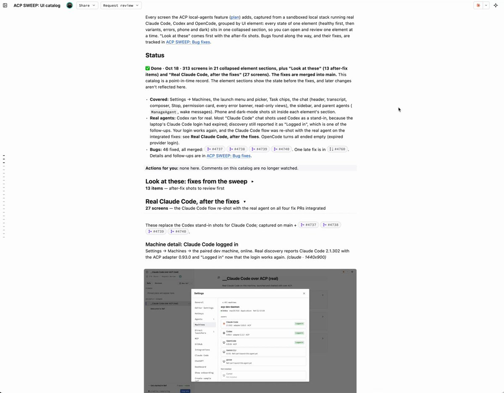
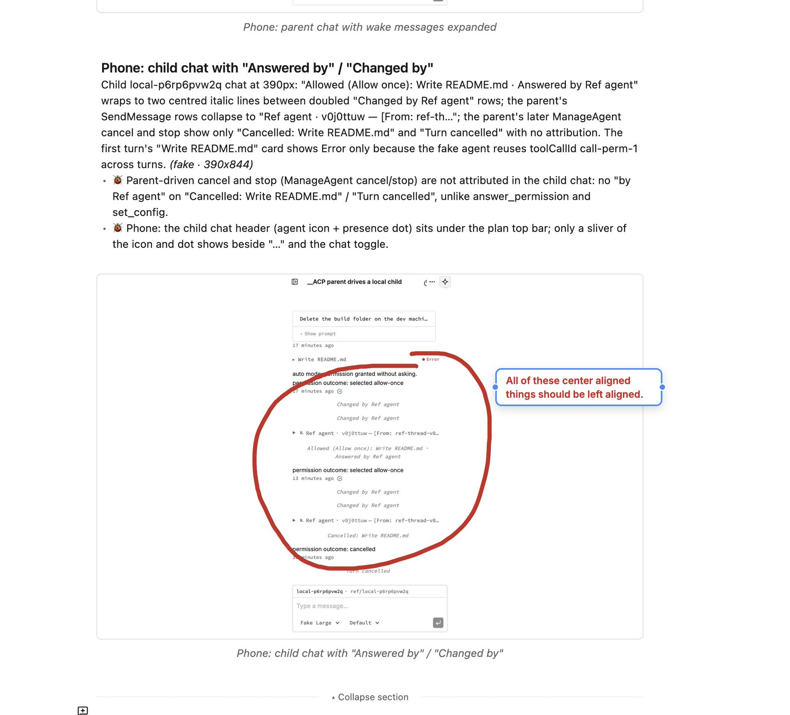
When the agent slops it up.
The tendency, and the move.
| Tendency | Move |
|---|---|
| It adds a part. | Ask whether you need it. |
| It makes one thing louder. | Ask whether a constraint changed. |
| It designs inside the product. | Iterate in a design tool. Ask for three or four variants. |
| It builds the happy path. | Sweep every state, grouped by surface. |
| It polishes every screen the same. | Zoom in on the crux. |
| It finishes in the silo. | Dogfood on staging. Review before and after with the team. |
| It patches a surprise in place. | Take the surprise back to the constraints. |
| It fixes every note immediately. | Ship the obvious ones. Park the minor ones for one redesign. |